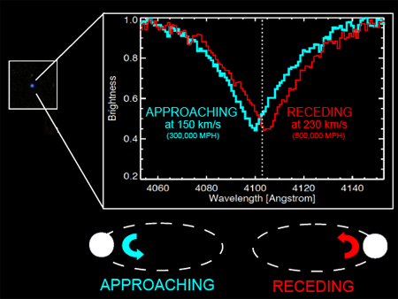
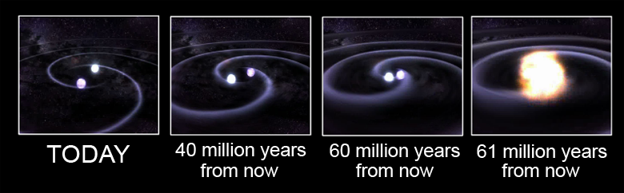
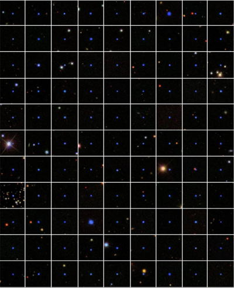
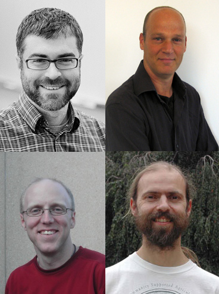

February 27, 2012
A little luck and a lot of hard work can really light up the sky.
Taking advantage of a little-known feature of the Sloan Digital Sky Survey, a team of astronomers led by Carles Badenes of the University of Pittsburgh has helped to clarify the origins of an important type of exploding star—using nothing but a few thousand small, faint stars in our own cosmic backyard.
|
+ enlarge  |
| An ordinary-looking faint blue star (left) is actually a pair of white dwarfs that could someday light up the sky as a Type Ia supernova.
We can't see the second white dwarf, but we know of its presence, and the future of both stars, from measuring multiple spectra of the star we can see. As the white dwarf orbits its unseen companion, it sometimes approaches us (blue in the drawing at the bottom) and sometimes receding from us (red). As it moves, lines in its spectrum shift to shorter and longer wavelengths due to the Doppler Effect (blue and red jagged lines, respectively). The amount of shift tells astronomers the star's velocity, which in turn tells them how soon the pair of white dwarfs will go supernova (Credit: Carles Badenes and the SDSS-III team) |
The astronomical fireworks the team studied are so-called "Type Ia supernovae," exploding stars so incredibly bright that we can see them even in the most distant galaxies. In a paper published today on the arXiv preprint server, Badenes and colleagues compared the number of these supernovae in distant galaxies to the number of binary white dwarfs in our galaxy. The rate is similar, suggesting that merging white dwarfs are indeed a reasonable explanation for these giant explosions.
Type Ia supernovae, while rare, are important because of what they can tell us about the universe. "We know that all Type Ia supernovae should be about the same brightness, so if we see one that looks fainter, it must be farther away," Badenes says. "That means that if we happen to see a Type Ia supernova in a distant galaxy, we can figure out how far away that galaxy is." In fact, using Type Ia supernovae to measure galaxy distances is what led astronomers to discover that our universe is acceleratingxa breakthrough discovery that was recognized with the 2011 Nobel Prize in Physics.
Although we know what happens during a Type Ia supernova explosion, amazingly, we don't know for sure what kinds of stars create them. "We know that there have to be two stars involved, and that one of them has to be a white dwarf," says Dan Maoz, an astronomer at Tel Aviv University in Israel and co-author of the paper released today. "But there are two possibilities for what the second star is, and we're not quite sure whether one or both possibilities is right."
The second star could be either a "normal" star like the Sun, or another white dwarf. If a star system contains two white dwarfs, then the white dwarfs revolve around one another at half a million miles an hour, speeding up and getting closer and closerxuntil one day they merge, most likely producing the fireworks of a Type Ia supernova.
|
+ enlarge  |
| This series of artist's concepts shows two white dwarfs orbiting one another. In the future, their orbits will get smaller and smaller, and faster and faster, until someday they merge and explode.
(Credit: NASA/GSFC/D. Berry; also avaiable as an animation) |
"There are reasons to suspect that Type Ia supernovae come from the merging of a double white dwarf," Maoz says. "But the biggest question mark is—are there enough double white dwarfs out there to produce the number of Type Ia supernovae that we see?"
Answering that question requires counting double white dwarfs, figuring out how often they merge, and comparing that rate to the supernova rate in distant galaxies. White dwarfs are so small and faint that there is no hope of seeing them in distant galaxies, so Badenes and Maoz turned to the only place we can see them—the part of our galaxy within about a thousand light-years of the Sun. And because their goal was to count double white dwarfs in the neighborhood, they turned to the only survey that could find enough of them to count.
|
+ enlarge  |
| This image mosaic shows 99 of the nearly 4,000 white dwarfs that Badenes, Maoz, Bickerton, and their colleagues examined. Of the four thousand, they found fifteen double white dwarfs.
(Credit: Carles Badenes and the SDSS-III team) |
To find a double star system, astronomers don't actually need to see both stars. Even if one of the stars is too faint, we can detect its presence by its effect on the star we do see. As the stars orbit each other at breakneck speeds, sometimes the visible star is moving towards us, sometimes away from us.
This back-and-forth motion can be detected in the star's spectrum (a measure of how much light the star gives off at different wavelengths), thanks to the Doppler Effect. The Doppler Effect is the reason that an ambulance siren changes in pitch from high to low as the ambulance passes. In the same way, light waves from an object that is moving towards us are shortened (blueshifted), while light waves from an object that is moving away from us are stretched (redshifted). Features in the spectrum called "spectral lines" provide landmarks to measure the shift, and hence the star's velocity.
But stars can move for lots of reasons, so just finding one velocity does not give enough evidence that the star has an unseen companion. To prove that, astronomers need at least two spectra. If the star's calculated velocity has changed between the time of the first and second spectrum, then astronomers know that the system is not one star, but two. Furthermore, they can deduce what kind of star the unseen companion must be. If both turn out to be white dwarfs, they can also use Einstein's General Theory of Relativity to calculate how much time remains until the two white dwarfs will merge and explode.
Using this technique requires at least two spectra of the white dwarf, and the SDSS had only one. So that approach wouldn't work for Badenes and Maoz. Or would it?
In 2008, Badenes was a postdoctoral researcher at Princeton University. Working in the same building was Robert Lupton, one of the "founding fathers" of the Sloan Digital Sky Survey. One day over coffee, Lupton told Badenes a little-known fact about SDSS data. When the SDSS telescope measures a spectrum, it is actually measuring three sub-spectra, then adding them together to make a complete spectrum. That way, if there was something wrong with one of the three, the survey could still use the other two. "Robert said that these spectra were there, and that someone should really do science with them," Badenes says. "I immediately realized that those sub-spectra were the missing piece. Now we could do exactly what we needed to do with SDSS data."
Then came the hard part. The three sub-spectra were never intended for public use, so they were hard to find, and in a format that was, as Badenes says, "unfriendly." Badenes and Maoz worked with Steve Bickerton, an astronomer at Princeton University, to gather and clean the sub-spectra. "We had to process the three sub-spectra separately, but process them in a way that we could directly compare them," says Bickerton. "It wasn't easy."
But persistence paid off, and within a year, the team had a list of more than 4,000 white dwarfs, each of which had two or more high-quality sub-spectra. Some of those four thousand, the team hoped, would show evidence that the star's velocity had changed between the three sub-spectra, indicating that what looked like one star was actually a double white dwarf.
|  |
| Clockwise from top left: Carles Badenes, Dan Maoz, Robert Lupton, Steve Bickerton
(Credit for Badnes photo: Photo by Keren Fedida) Then came the hard part. The three sub-spectra were never intended for public use, so they were hard to find, and in a format that was, as Badenes says, "unfriendly." Badenes and Maoz worked with Steve Bickerton, an astronomer at Princeton University, to gather and clean the sub-spectra. "We had to process the three sub-spectra separately, but process them in a way that we could directly compare them," says Bickerton. "It wasn't easy." |
From among the original four thousand, the team found fifteen stars certain to be double white dwarfs—and "if there were more than 15, we would have seen more than 15," Badenes says. Having found 15 double white dwarfs in the local neighborhood, the team could then use computer simulations to calculate the rate at which double white dwarfs merge. They could then compare the number of merging white dwarfs here to the number of Type Ia supernovae seen in distant galaxies that resemble the Milky Way.
The result? On average, one double white dwarf merger event occurs in the Milky Way about once a century. That number is remarkably close to the rate of Type Ia supernovae we observe in galaxies like our own, suggesting that the merger of a double white dwarf system is a plausible explanation for Type Ia supernovae.
In addition to providing a key clue about the nature of these important events, the team's discovery shows the potential of giant astronomical surveys like the SDSS. "Twenty years ago, we decided to take three sub-spectra for each spectrum. We did that for entirely practical reasons," says Robert Lupton, the Princeton astronomer who first told Badenes about the sub-spectra. "We had no idea that would someday give us an important clue to the mystery of Type Ia supernovae. That was a great insight by Carles and Dan, and it was a bit of a lucky break for us."
Who knows what other "lucky breaks" the universe might have in store?
Badenes, C. & D. Maoz, 2011, The merger rate of binary white dwarfs in the galactic disk, submitted to Astrophysical Journal Letters and available on the arXiv preprint server.
Funding for the SDSS and SDSS-II has been provided by the Alfred P. Sloan Foundation, the Participating Institutions, the National Science Foundation, the U.S. Department of Energy, the National Aeronautics and Space Administration, the Japanese Monbukagakusho, the Max Planck Society, and the Higher Education Funding Council for England. The SDSS Web Site is http://www.sdss.org/.
SDSS is managed by the Astrophysical Research Consortium for the Participating Institutions. The SDSS-II Participating Institutions are the American Museum of Natural History, Astrophysical Institute Potsdam, University of Basel, University of Cambridge, Case Western Reserve University, University of Chicago, Drexel University, Fermilab, the Institute for Advanced Study, the Japan Participation Group, Johns Hopkins University, the Joint Institute for Nuclear Astrophysics, the Kavli Institute for Particle Astrophysics and Cosmology, the Korean Scientist Group, the Chinese Academy of Sciences (LAMOST), Los Alamos National Laboratory, the Max-Planck-Institute for Astronomy (MPIA), the Max-Planck-Institute for Astrophysics (MPA), New Mexico State University, Ohio State University, University of Pittsburgh, University of Portsmouth, Princeton University, the United States Naval Observatory, and the University of Washington.
{kind=link}
{kind=link}
{kind=link}